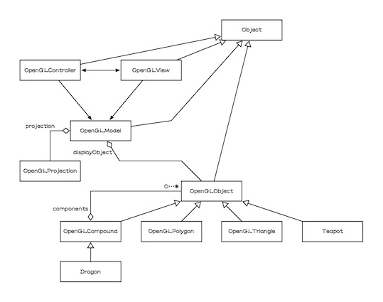

描画オブジェクト階層（OpenGLObjectインヘリタンス）を導入し、プロジェクションオブジェクト（OpenGLProjection）を導入して、リファクタリングを続けてきました。さらに続けましょう。今回のバージョンでは、デザインパターンとして有名なオブザーバーのパターンであるMVC（モデル・ビュー・コントローラ）を導入します。それもJOGL（OpenGL）のためのMVCです。

そして、JOGL（OpenGL）のイベントリスナー（GLEventListener）をビューに実装します。また、ウィンドウリスナー（WindowListener）をコントローラに実装します。本章で実装してゆくメソッド「display(…)・dispose(…)・init(…)・reshape(…)」は、いずれも描画（表示）に関わりますから、ビューが担うのが適当です。一方、次々章で実装してゆく幾つかのさらなるリスナーたちは、マウス・キーボードなどに関わります。ユーザから指示（入力）を受け付けて、GUI全体を制御するものになります。したがって、コントローラが担うのが適当になります。
モデルであるOpenGLModelがdisplayObjectに描画オブジェクトのサブクラスのインスタンスを1つ保持する構造です。そして、プロジェクションもモデルが保持しています。以下の差分（変更箇所：編集部分）やクラス階層（インヘリタンス）を参考にしながら、その後に示すソースコード（Version 5）と同じになるように、プログラムを編集・加筆してください。
【前バージョンからの差分＝変更箇所】【ファイルやディレクトリの増減】 ======================================== Compare: ./Version4 1: dragon/Dragon.java 2: dragon/Example.java 3: mvc4jogl/OpenGLCompound.java 4: mvc4jogl/OpenGLObject.java 5: mvc4jogl/OpenGLPolygon.java 6: mvc4jogl/OpenGLProjection.java 7: mvc4jogl/OpenGLTriangle.java 8: mvc4jogl/Teapot.java with: ./Version5 1: dragon/Dragon.java 2: dragon/Example.java 3: mvc4jogl/OpenGLCompound.java 4: mvc4jogl/OpenGLController.java 5: mvc4jogl/OpenGLModel.java 6: mvc4jogl/OpenGLObject.java 7: mvc4jogl/OpenGLPolygon.java 8: mvc4jogl/OpenGLProjection.java 9: mvc4jogl/OpenGLTriangle.java 10: mvc4jogl/OpenGLView.java 11: mvc4jogl/Teapot.java ======================================== Added (or Removed) files: 3a4,5 > mvc4jogl/OpenGLController.java > mvc4jogl/OpenGLModel.java 7a10 > mvc4jogl/OpenGLView.java ======================================== 【それぞれのファイルの変更】 ---------------------------------------- Compare: ./Version4/dragon/Dragon.java with: ./Version5/dragon/Dragon.java ---------------------------------------- Result: 6a7 > import mvc4jogl.OpenGLModel; 97,100c98,101 < Example anExample = new Example(aDragon); < anExample.axesScale(1.0d); < anExample.windowTitle("Dragon"); < OpenGLProjection aProjection = anExample.projection(); --- > OpenGLModel aModel = new OpenGLModel(aDragon); > aModel.axesScale(1.0d); > aModel.windowTitle("Dragon"); > OpenGLProjection aProjection = aModel.projection(); 105c106 < anExample.open(x, y); --- > aModel.open(x, y); ---------------------------------------- Compare: ./Version4/dragon/Example.java with: ./Version5/dragon/Example.java ---------------------------------------- Result: 3,22d2 < import com.jogamp.opengl.GL; < import com.jogamp.opengl.GL2; < import com.jogamp.opengl.glu.GLU; < import com.jogamp.opengl.util.gl2.GLUT; < < import com.jogamp.opengl.awt.GLCanvas; < import com.jogamp.opengl.GLAutoDrawable; < import com.jogamp.opengl.GLCapabilities; < import com.jogamp.opengl.GLEventListener; < import com.jogamp.opengl.GLProfile; < < import javax.swing.JFrame; < import java.nio.FloatBuffer; < < import java.awt.event.WindowAdapter; < import java.awt.event.WindowEvent; < < import mvc4jogl.OpenGLObject; < import mvc4jogl.OpenGLProjection; < 23a4 > * ドラゴンをOpenGLでレンダリング（描画）するプログラムである。 25a7 > * オブザーバ・デザインパターン（MVC: Model-View-Controller）を用いた典型的（模範的）なプログラムである。 27c9 < public class Example extends WindowAdapter implements GLEventListener --- > public class Example extends Object 30,361c12 < * GLオブジェクトを記憶するフィールドである。 < */ < protected GL2 gl; < < /** < * GLユーティリティを記憶するフィールドである。 < */ < protected GLU glu; < < /** < * GLユーティリティツールキットを記憶するフィールドである。 < */ < protected GLUT glut; < < /** < * ビューの幅を記憶するフィールドである。 < */ < protected int width; < < /** < * ビューの高さを記憶するフィールドである。 < */ < protected int height; < < /** < * 描画オブジェクトを記憶するフィールドである。 < */ < protected OpenGLObject displayObject; < < /** < * プロジェクションを記憶するフィールドである。 < */ < protected OpenGLProjection projection; < < /** < * XYZ軸のスケール（大きさ）を記憶するフィールドである。 < */ < protected double axesScale; < < /** < * ウィンドウタイトルを記憶するフィールドである。 < */ < protected String windowTitle; < < /** < * Exampleのコンストラクタである。 < */ < public Example(OpenGLObject aBody) < { < // System.out.println("Example"); < < this.displayObject = aBody; < this.projection = new OpenGLProjection(); < this.axesScale = 1.0; < this.windowTitle = "Untitled"; < < return; < } < < /** < * プロジェクションを応答する。 < * @return プロジェクション < */ < public OpenGLProjection projection() < { < return this.projection; < } < < /** < * XYZ軸の大きさを応答する。 < * @return XYZ軸の大きさ < */ < public double axesScale() < { < return this.axesScale; < } < < /** < * XYZ軸の大きさを設定する。 < * @param scale XYZ軸の大きさ < */ < public void axesScale(double scale) < { < this.axesScale = scale; < < return; < } < < /** < * ウィンドウタイトルを応答する。 < * @return ウィンドウタイトル < */ < public String windowTitle() < { < return this.windowTitle; < } < < /** < * ウィンドウタイトルを設定する。 < * @param title ウィンドウタイトル < */ < public void windowTitle(String title) < { < this.windowTitle = title; < < return; < } < < /** < * OpenGL起動時に初期化のために呼び出される。 < * @param aDrawable OpenGLの描画ダーゲット < */ < public void init(GLAutoDrawable aDrawable) < { < // System.out.println("init"); < < // グラフィックライブラリ（gl）を獲得し、 < // グラフィックライブラリユーティリティ（glu）と < // グラフィックライブラリユーティリティツールキット（glut）を生成する。 < this.gl = aDrawable.getGL().getGL2(); < this.glu = new GLU(); < this.glut = new GLUT(); < < // 材質の有効化 < // 陰線隠面処理の有効化 < // 片面表示機能の無効化 < // 法線ベクトルの有効化 < this.gl.glEnable(GL2.GL_COLOR_MATERIAL); < this.gl.glEnable(GL2.GL_DEPTH_TEST); < this.gl.glDisable(GL2.GL_CULL_FACE); < this.gl.glEnable(GL2.GL_NORMALIZE); < < return; < } < < /** < * OpenGL描画を行う際に呼び出される。 < * @param aDrawable OpenGLの描画ダーゲット < */ < public void display(GLAutoDrawable aDrawable) < { < // System.out.println("display"); < < // 視界（視点・注視点・上方向ベクトル・視界角・近・遠）を整（設）える。 < double[] eyePoint = this.projection.eyePoint(); < double[] sightPoint = this.projection.sightPoint(); < double[] upVector = this.projection.upVector(); < double fovy = this.projection.fovy(); < double near = this.projection.near(); < double far = this.projection.far(); < < // キャンバス（ウィンドウ）の大きさからアスペクト比を求める。 < double aspect = (double)width / (double)height; < < // プロジェクション（遠近法）を設定する。 < this.gl.glMatrixMode(GL2.GL_PROJECTION); < this.gl.glLoadIdentity(); < this.glu.gluPerspective(fovy, aspect, near, far); < < // 視界を設定する。 < this.gl.glMatrixMode(GL2.GL_MODELVIEW); < this.gl.glLoadIdentity(); < this.glu.gluLookAt( < eyePoint[0], eyePoint[1], eyePoint[2], < sightPoint[0], sightPoint[1], sightPoint[2], < upVector[0], upVector[1], upVector[2]); < < // キャンバスをクリアする。 < this.gl.glClearColor(1.0f, 1.0f, 1.0f, 1.0f); < this.gl.glClear(GL2.GL_COLOR_BUFFER_BIT | GL2.GL_DEPTH_BUFFER_BIT); < < // 照明を設定する。 < this.gl.glEnable(GL2.GL_LIGHTING); < this.gl.glLightModelfv(GL2.GL_LIGHT_MODEL_AMBIENT, OpenGLObject.asFloatBuffer(new float[] { 0.5f, 0.5f, 0.5f, 1.0f })); < this.gl.glLightModelf(GL2.GL_LIGHT_MODEL_LOCAL_VIEWER, 0.0f); < this.gl.glLightModelf(GL2.GL_LIGHT_MODEL_TWO_SIDE, 1.0f); < this.gl.glEnable(GL2.GL_LIGHT0); < this.gl.glLightfv(GL2.GL_LIGHT0, GL2.GL_POSITION, OpenGLObject.asFloatBuffer(new float[] { 0.0f, 0.0f, 1.0f, 0.0f })); < this.gl.glLightfv(GL2.GL_LIGHT0, GL2.GL_SPOT_DIRECTION, OpenGLObject.asFloatBuffer(new float[] { 0.0f, 0.0f, -1.0f })); < this.gl.glLightfv(GL2.GL_LIGHT0, GL2.GL_SPOT_CUTOFF, OpenGLObject.asFloatBuffer(new float[] { 90.0f })); < this.gl.glLightfv(GL2.GL_LIGHT0, GL2.GL_DIFFUSE, OpenGLObject.asFloatBuffer(new float[] { 0.5f, 0.5f, 0.5f, 1.0f })); < this.gl.glLightfv(GL2.GL_LIGHT0, GL2.GL_SPECULAR, OpenGLObject.asFloatBuffer(new float[] { 0.5f, 0.5f, 0.5f, 1.0f })); < this.gl.glLightfv(GL2.GL_LIGHT0, GL2.GL_LINEAR_ATTENUATION, OpenGLObject.asFloatBuffer(new float[] { 0.0f })); < this.gl.glLightfv(GL2.GL_LIGHT0, GL2.GL_QUADRATIC_ATTENUATION, OpenGLObject.asFloatBuffer(new float[] { 0.0f })); < this.gl.glLightfv(GL2.GL_LIGHT0, GL2.GL_CONSTANT_ATTENUATION, OpenGLObject.asFloatBuffer(new float[] { 1.0f })); < < // 世界座標系（XYZ軸）を描画する。 < this.displayAxes(); < < // 描画オブジェクトをレンダリング（描画）する。 < this.displayObject.rendering(this.gl, this.glu, this.glut); < < return; < } < < /** < * XYZ軸（世界座標系）を描画する。 < */ < public void displayAxes() < { < double scale = this.axesScale(); < < this.gl.glBegin(GL2.GL_LINES); < < // X軸（赤） < this.gl.glColor4d(1.0d, 0.0d, 0.0d, 1.0d); < this.gl.glVertex3d(-1.000d * scale, 0.0d, 0.0d); < this.gl.glVertex3d( 1.618d * scale, 0.0d, 0.0d); < < // Y軸（緑） < this.gl.glColor4d(0.0d, 1.0d, 0.0d, 1.0d); < this.gl.glVertex3d(0.0d, -1.000d * scale, 0.0d); < this.gl.glVertex3d(0.0d, 1.618d * scale, 0.0d); < < // Z軸（青） < this.gl.glColor4d(0.0d, 0.0d, 1.0d, 1.0d); < this.gl.glVertex3d(0.0d, 0.0d, -1.000d * scale); < this.gl.glVertex3d(0.0d, 0.0d, 1.618d * scale); < < this.gl.glEnd(); < < return; < } < < /** < * OpenGL表示モードや表示デバイスが変更された際に呼び出される。 < * @param aDrawable OpenGLの描画ダーゲット < * @param modeChanged 表示モードが変更されたか否か < * @param deviceChanged 表示デバイスが変更されたか否か < */ < public void displayChanged(GLAutoDrawable aDrawable, boolean modeChanged, boolean deviceChanged) < { < // System.out.println("displayChanged"); < < return; < } < < /** < * OpenGLの資源が破棄された際に呼び出される。 < * @param aDrawable OpenGLの描画ダーゲット < */ < public void dispose(GLAutoDrawable aDrawable) < { < // System.out.println("dispose"); < < return; < } < < /** < * OpenGL表示領域が変更された際に呼び出される。 < * @param aDrawable OpenGLの描画ダーゲット < * @param x 表示領域のX座標 < * @param y 表示領域のY座標 < * @param w 表示領域の幅 < * @param h 表示領域の高さ < */ < public void reshape(GLAutoDrawable aDrawable, int x, int y, int w, int h) < { < // System.out.println("reshape"); < < this.width = w; < this.height = h; < < this.gl.glViewport(0, 0, width, height); < < return; < } < < < /** < * OpenGLのウィンドウを開く。 < */ < public void open() < { < this.open(-1, -1); < < return; < } < < /** < * OpenGLのウィンドウを指定された場所(x, y)に開く。 < * @param x ウィンドウを開く場所のx座標 < * @param y ウィンドウを開く場所のy座標 < */ < public void open(int x, int y) < { < // OpenGL描画のためのキャンバスを生成する。 < GLProfile profile = GLProfile.get(GLProfile.GL2); < GLCapabilities capabilities = new GLCapabilities(profile); < capabilities.setDoubleBuffered(true); < GLCanvas aCanvas = new GLCanvas(capabilities); < aCanvas.addGLEventListener(this); < aCanvas.setFocusable(true); < < // フレームを生成し、上記のキャンバスを乗せて、ウィンドウとして開く。 < JFrame aFrame = new JFrame(this.windowTitle()); < aFrame.add(aCanvas); < aFrame.addNotify(); < int titleBarHeight = aFrame.getInsets().top; < aFrame.setSize(400, 400 + titleBarHeight); < if (x < 0 && y < 0) < { < aFrame.setLocationRelativeTo(null); < } < else < { < aFrame.setLocation(x, y); < } < // aFrame.setDefaultCloseOperation(JFrame.DO_NOTHING_ON_CLOSE); < aFrame.addWindowListener(this); < aFrame.setFocusable(false); < aFrame.setVisible(true); < < return; < } < < /** < * ウィンドウを閉じようとした時に呼び出される。 < * @param aWindowEvent ウィンドウイベント < */ < public void windowClosing(WindowEvent aWindowEvent) < { < // System.out.println(aWindowEvent.paramString()); < < // 終了する。 < System.exit(0); < < return; < } < < /** < * ドラゴンを描くOpenGLのウィンドウを開く。 --- > * OpenGLオブジェクトからOpenGLモデルを生成してウィンドウを開く。 366c17,18 < // System.out.println("main"); --- > int x = 100; > int y = 100; 368c20,21 < Dragon.open(100, 100); --- > // ドラゴンを生成してウィンドウを開く。 > Dragon.open(x += 25, y += 25); ---------------------------------------- Compare: ./Version4/mvc4jogl/OpenGLCompound.java with: ./Version5/mvc4jogl/OpenGLCompound.java ---------------------------------------- Result: ---------------------------------------- Compare: ./Version4/mvc4jogl/OpenGLObject.java with: ./Version5/mvc4jogl/OpenGLObject.java ---------------------------------------- Result: ---------------------------------------- Compare: ./Version4/mvc4jogl/OpenGLPolygon.java with: ./Version5/mvc4jogl/OpenGLPolygon.java ---------------------------------------- Result: ---------------------------------------- Compare: ./Version4/mvc4jogl/OpenGLProjection.java with: ./Version5/mvc4jogl/OpenGLProjection.java ---------------------------------------- Result: ---------------------------------------- Compare: ./Version4/mvc4jogl/OpenGLTriangle.java with: ./Version5/mvc4jogl/OpenGLTriangle.java ---------------------------------------- Result: ---------------------------------------- Compare: ./Version4/mvc4jogl/Teapot.java with: ./Version5/mvc4jogl/Teapot.java ---------------------------------------- Result: ----------------------------------------
package dragon;
import java.util.Iterator;
import java.util.List;
import mvc4jogl.OpenGLCompound;
import mvc4jogl.OpenGLModel;
import mvc4jogl.OpenGLObject;
import mvc4jogl.OpenGLProjection;
import mvc4jogl.OpenGLTriangle;
import utility.StringUtility;
/**
* ドラゴンをレンダリング（描画）する。
* XYZ軸に加えてドラゴンを描画する。
* 視界（視点・注視点・上方向ベクトル・視界角・近・遠）もドラゴンが応答する。
*/
public class Dragon extends OpenGLCompound
{
/**
* ドラゴンのコンストラクタである。
* <a href="http://www.cc.kyoto-su.ac.jp/~atsushi/Programs/VisualWorks/Dragon/dragon.txt">dragon.txt</a>からデータを読み取って三角形群を生成する。
*/
public Dragon()
{
// System.out.println("Dragon");
String urlString = "http://www.cc.kyoto-su.ac.jp/~atsushi/Programs/VisualWorks/Dragon/dragon.txt";
List<String> aCollection = StringUtility.readTextFromURL(urlString);
int numberOfVertexes = 0;
int numberOfTriangles = 0;
Iterator<String> anIterator = aCollection.iterator();
while (anIterator.hasNext())
{
String aString = anIterator.next();
List<String> aList = StringUtility.splitString(aString, " \t\n\r");
if (aList.size() == 0) { continue; }
// System.out.println(aList);
String firstString = aList.get(0);
if (firstString.compareTo("number_of_vertexes") == 0)
{
numberOfVertexes = Integer.valueOf(aList.get(1));
// System.out.println(numberOfVertexes);
}
if (firstString.compareTo("number_of_triangles") == 0)
{
numberOfTriangles = Integer.valueOf(aList.get(1));
// System.out.println(numberOfTriangles);
}
if (firstString.compareTo("end_header") == 0)
{
double[][] vertexArray = new double[numberOfVertexes][3];
for (int n = 0; n < numberOfVertexes; n++)
{
aString = anIterator.next();
aList = StringUtility.splitString(aString, " \t\n\r");
double x = Double.valueOf(aList.get(0));
double y = Double.valueOf(aList.get(1));
double z = Double.valueOf(aList.get(2));
vertexArray[n][0] = x;
vertexArray[n][1] = y;
vertexArray[n][2] = z;
// System.out.printf("%d: %g, %g, %g\n", n, vertexArray[n][0], vertexArray[n][1], vertexArray[n][2]);
}
for (int n = 0; n < numberOfTriangles; n++)
{
aString = anIterator.next();
aList = StringUtility.splitString(aString, " \t\n\r");
int i = Integer.valueOf(aList.get(0)) - 1;
int j = Integer.valueOf(aList.get(1)) - 1;
int k = Integer.valueOf(aList.get(2)) - 1;
double[] vertex1 = vertexArray[i];
double[] vertex2 = vertexArray[j];
double[] vertex3 = vertexArray[k];
OpenGLTriangle aTriangle = new OpenGLTriangle(vertex1, vertex2, vertex3);
aTriangle.rgb(0.5d, 0.5d, 1.0d);
this.add(aTriangle);
// System.out.printf("%d: %s\n", n, aTriangle);
}
}
}
return;
}
/**
* ドラゴンを生成してウィンドウを開く。
* @param x ウィンドウを開く場所のx座標
* @param y ウィンドウを開く場所のy座標
*/
public static void open(int x, int y)
{
// 描画オブジェクトを生成する。
OpenGLObject aDragon = new Dragon();
// モデルに描画オブジェクトを指定してウィンドウを開く。
OpenGLModel aModel = new OpenGLModel(aDragon);
aModel.axesScale(1.0d);
aModel.windowTitle("Dragon");
OpenGLProjection aProjection = aModel.projection();
aProjection.eyePoint(-5.5852450791872d, 3.07847342734d, 15.794105252496d);
aProjection.sightPoint(0.27455347776413d, 0.20096999406815d, -0.11261999607086d);
aProjection.upVector(0.1018574904194d, 0.98480906061847d, -0.14062775604137d);
aProjection.fovy(12.642721790235d);
aModel.open(x, y);
return;
}
}
package dragon;
/**
* ドラゴンをOpenGLでレンダリング（描画）するプログラムである。
* JOGL（Java bindings for OpenGL）の例題プログラムである。
* OpenGLを使ったJavaによる三次元グラフィックスの初歩的な練習になる。
* オブザーバ・デザインパターン（MVC: Model-View-Controller）を用いた典型的（模範的）なプログラムである。
*/
public class Example extends Object
{
/**
* OpenGLオブジェクトからOpenGLモデルを生成してウィンドウを開く。
* @param arguments コマンドの引数列（文字列の配列）
*/
public static void main(String[] arguments)
{
int x = 100;
int y = 100;
// ドラゴンを生成してウィンドウを開く。
Dragon.open(x += 25, y += 25);
return;
}
}
mvc4jogl.OpenGLCompound（以前に示したものと同様ゆえに省略）
…
package mvc4jogl;
import java.awt.event.WindowEvent;
import java.awt.event.WindowListener;
/**
* Ｃ：OpenGLを使ったJava三次元グラフィックスのためのコントローラ（Controller）である。
*/
public class OpenGLController extends Object implements WindowListener
{
/**
* モデルを記憶するフィールドである。
*/
protected OpenGLModel model;
/**
* ビューを記憶するフィールドである。
*/
protected OpenGLView view;
/**
* コントローラのコンストラクタである。
* モデルとビューを引数にしてコントローラのインスタンスを応答する。
* @param aModel モデル
* @param aView ビュー
*/
public OpenGLController(OpenGLModel aModel, OpenGLView aView)
{
model = aModel;
view = aView;
return;
}
// --- WindowListener --------------------------------------------------
/**
* ウィンドウがに設定されると呼び出される。
* @param aWindowEvent ウィンドウイベント
*/
public void windowActivated(WindowEvent aWindowEvent)
{
// System.out.println(aWindowEvent.paramString());
return;
}
/**
* ウィンドウに対するdisposeの呼び出しの結果として、ウィンドウがクローズされたときに呼び出される。
* @param aWindowEvent ウィンドウイベント
*/
public void windowClosed(WindowEvent aWindowEvent)
{
// System.out.println(aWindowEvent.paramString());
return;
}
/**
* ウィンドウを閉じようとした時に呼び出される。
* @param aWindowEvent ウィンドウイベント
*/
public void windowClosing(WindowEvent aWindowEvent)
{
// System.out.println(aWindowEvent.paramString());
// 終了する。
System.exit(0);
return;
}
/**
* ウィンドウがアクティブでなくなったときに呼び出される。
* @param aWindowEvent ウィンドウイベント
*/
public void windowDeactivated(WindowEvent aWindowEvent)
{
// System.out.println(aWindowEvent.paramString());
return;
}
/**
* ウィンドウが最小化された状態から通常の状態に変更されたときに呼び出される。
* @param aWindowEvent ウィンドウイベント
*/
public void windowDeiconified(WindowEvent aWindowEvent)
{
// System.out.println(aWindowEvent.paramString());
return;
}
/**
* ウィンドウが通常の状態から最小化された状態に変更されたときに呼び出される。
* @param aWindowEvent ウィンドウイベント
*/
public void windowIconified(WindowEvent aWindowEvent)
{
// System.out.println(aWindowEvent.paramString());
return;
}
/**
* ウィンドウが最初に可視になったときに呼び出される。
* @param aWindowEvent ウィンドウイベント
*/
public void windowOpened(WindowEvent aWindowEvent)
{
// System.out.println(aWindowEvent.paramString());
return;
}
// ---------------------------------------------------------------------
}
package mvc4jogl;
import com.jogamp.opengl.GL;
import com.jogamp.opengl.GL2;
import com.jogamp.opengl.glu.GLU;
import com.jogamp.opengl.util.gl2.GLUT;
import com.jogamp.opengl.awt.GLCanvas;
import java.awt.Frame;
/**
* Ｍ：OpenGLを使ったJava三次元グラフィックスのためのモデル（Model）である。
*/
public class OpenGLModel extends Object
{
/**
* 描画オブジェクトを記憶するフィールドである。
*/
protected OpenGLObject displayObject;
/**
* プロジェクションを記憶するフィールドである。
*/
protected OpenGLProjection projection;
/**
* 高速描画のためのディスプレイリストを記憶するフィールドである。
*/
protected int displayList;
/**
* ビューを記憶するフィールドである。
*/
protected OpenGLView view;
/**
* XYZ軸のスケール（大きさ）を記憶するフィールドである。
*/
protected double axesScale;
/**
* ウィンドウタイトルを記憶するフィールドである。
*/
protected String windowTitle;
/**
* モデルのコンストラクタである。
* 自分を指定してビューを生成することによりＭＶＣを形成する。
* @param aBody 描画オブジェクト
*/
public OpenGLModel(OpenGLObject aBody)
{
this.displayObject = aBody;
this.projection = new OpenGLProjection();
this.displayList = 0;
this.view = new OpenGLView(this);
this.axesScale = 1.0;
this.windowTitle = "Untitled";
return;
}
/**
* XYZ軸の大きさを応答する。
* @return XYZ軸の大きさ
*/
public double axesScale()
{
return this.axesScale;
}
/**
* XYZ軸の大きさを設定する。
* @param scale XYZ軸の大きさ
*/
public void axesScale(double scale)
{
this.axesScale = scale;
return;
}
/**
* ディスプレイリストを応答する。
* @return ディスプレイリスト
*/
public int displayList()
{
if (this.displayList == 0)
{
GL2 gl = this.view.gl();
GLU glu = this.view.glu();
GLUT glut = this.view.glut();
this.displayList = gl.glGenLists(1);
gl.glNewList(this.displayList, GL2.GL_COMPILE);
this.displayObject.rendering(gl, glu, glut);
gl.glEndList();
}
return this.displayList;
}
/**
* OpenGLのウィンドウを開く。
*/
public void open()
{
this.open(-1, -1);
return;
}
/**
* OpenGLのウィンドウを指定された場所(x, y)に開く。
* @param x ウィンドウを開く場所のx座標
* @param y ウィンドウを開く場所のy座標
*/
public void open(int x, int y)
{
OpenGLView aView = this.view;
OpenGLController aController = aView.controller();
// OpenGL描画のためのキャンバスを生成する。
GLCanvas aCanvas = this.view.canvas();
aCanvas.addGLEventListener(aView);
aCanvas.setFocusable(true);
// フレームを生成し、上記のキャンバスを乗せて、ウィンドウとして開く。
Frame aFrame = new Frame(this.windowTitle());
aFrame.add(aCanvas);
aFrame.addNotify();
int titleBarHeight = aFrame.getInsets().top;
aFrame.setSize(400, 400 + titleBarHeight);
if (x < 0 && y < 0)
{
aFrame.setLocationRelativeTo(null);
}
else
{
aFrame.setLocation(x, y);
}
aFrame.addWindowListener(aController);
aFrame.setFocusable(false);
aFrame.setVisible(true);
return;
}
/**
* プロジェクションを応答する。
* @return プロジェクション
*/
public OpenGLProjection projection()
{
return this.projection;
}
/**
* レンダリング（描画）する。
*/
public void rendering()
{
GL2 gl = this.view.gl();
gl.glCallList(this.displayList());
return;
}
/**
* ウィンドウタイトルを応答する。
* @return ウィンドウタイトル
*/
public String windowTitle()
{
return this.windowTitle;
}
/**
* ウィンドウタイトルを設定する。
* @param title ウィンドウタイトル
*/
public void windowTitle(String title)
{
this.windowTitle = title;
return;
}
}
mvc4jogl.OpenGLObject（以前に示したものと同様ゆえに省略）
…
mvc4jogl.OpenGLPolygon（以前に示したものと同様ゆえに省略）
…
mvc4jogl.OpenGLProjection（以前に示したものと同様ゆえに省略）
…
mvc4jogl.OpenGLTriangle（以前に示したものと同様ゆえに省略）
…
package mvc4jogl;
import com.jogamp.opengl.GL;
import com.jogamp.opengl.GL2;
import com.jogamp.opengl.glu.GLU;
import com.jogamp.opengl.util.gl2.GLUT;
import com.jogamp.opengl.awt.GLCanvas;
import com.jogamp.opengl.GLAutoDrawable;
import com.jogamp.opengl.GLCapabilities;
import com.jogamp.opengl.GLEventListener;
import com.jogamp.opengl.GLProfile;
import java.awt.Dimension;
/**
* Ｖ：OpenGLを使ったJava三次元グラフィックスのためのビュー（View）である。
*/
public class OpenGLView extends Object implements GLEventListener
{
/**
* モデルを記憶するフィールドである。
*/
protected OpenGLModel model;
/**
* コントローラを記憶するフィールドである。
*/
protected OpenGLController controller;
/**
* OpenGLキャンバスを記憶するフィールドである。
*/
protected GLCanvas canvas;
/**
* GLオブジェクトを記憶するフィールドである。
*/
protected GL2 gl;
/**
* GLユーティリティを記憶するフィールドである。
*/
protected GLU glu;
/**
* GLユーティリティツールキットを記憶するフィールドである。
*/
protected GLUT glut;
/**
* ビューの幅を記憶するフィールドである。
*/
protected int width;
/**
* ビューの高さを記憶するフィールドである。
*/
protected int height;
/**
* ビューのコンストラクタである。
* モデルと自分を指定してコントローラを生成することによりＭＶＣを形成する。
* そして、OpenGLキャンバスを生成する。
* @param aModel モデル
*/
public OpenGLView(OpenGLModel aModel)
{
this.model = aModel;
this.controller = new OpenGLController(model, this);
// GLProfile profile = GLProfile.getDefault();
GLProfile profile = GLProfile.get(GLProfile.GL2);
GLCapabilities capabilities = new GLCapabilities(profile);
capabilities.setDoubleBuffered(true);
this.canvas = new GLCanvas(capabilities);
return;
}
/**
* OpenGLキャンバスを応答する。
* @return OpenGLキャンバス
*/
public GLCanvas canvas()
{
return this.canvas;
}
/**
* コントローラを応答する。
* @return コントローラ
*/
public OpenGLController controller()
{
return this.controller;
}
/**
* GLを応答する。
* @return GL2
*/
public GL2 gl()
{
return this.gl;
}
/**
* GLUを応答する。
* @return GLU
*/
public GLU glu()
{
return this.glu;
}
/**
* GLUTを応答する。
* @return GLUT
*/
public GLUT glut()
{
return this.glut;
}
/**
* OpenGL起動時に初期化のために呼び出される。
* @param aDrawable OpenGLの描画ダーゲット
*/
public void init(GLAutoDrawable aDrawable)
{
// System.out.println("init");
// グラフィックライブラリ（gl）を獲得し、
// グラフィックライブラリユーティリティ（glu）と
// グラフィックライブラリユーティリティツールキット（glut）を生成する。
this.gl = aDrawable.getGL().getGL2();
this.glu = new GLU();
this.glut = new GLUT();
// 材質の有効化
// 陰線隠面処理の有効化
// 片面表示機能の無効化
// 法線ベクトルの有効化
this.gl.glEnable(GL2.GL_COLOR_MATERIAL);
this.gl.glEnable(GL2.GL_DEPTH_TEST);
this.gl.glDisable(GL2.GL_CULL_FACE);
this.gl.glEnable(GL2.GL_NORMALIZE);
return;
}
/**
* OpenGL描画を行う際に呼び出される。
* @param aDrawable OpenGLの描画ダーゲット
*/
public void display(GLAutoDrawable aDrawable)
{
// System.out.println("display");
// aDrawable.swapBuffers();
// 視界（視点・注視点・上方向ベクトル・視界角・近・遠）を整（設）える。
OpenGLProjection projection = this.model.projection();
double[] eyePoint = projection.eyePoint();
double[] sightPoint = projection.sightPoint();
double[] upVector = projection.upVector();
double fovy = projection.fovy();
double near = projection.near();
double far = projection.far();
// キャンバス（ウィンドウ）の大きさからアスペクト比を求める。
double aspect = (double)width / (double)height;
// プロジェクション（遠近法）を設定する。
this.gl.glMatrixMode(GL2.GL_PROJECTION);
this.gl.glLoadIdentity();
this.glu.gluPerspective(fovy, aspect, near, far);
// 視界を設定する。
this.gl.glMatrixMode(GL2.GL_MODELVIEW);
this.gl.glLoadIdentity();
this.glu.gluLookAt(
eyePoint[0], eyePoint[1], eyePoint[2],
sightPoint[0], sightPoint[1], sightPoint[2],
upVector[0], upVector[1], upVector[2]);
// キャンバスをクリアする。
this.gl.glClearColor(1.0f, 1.0f, 1.0f, 1.0f);
this.gl.glClear(GL2.GL_COLOR_BUFFER_BIT | GL2.GL_DEPTH_BUFFER_BIT);
// 照明を設定する。
this.gl.glEnable(GL2.GL_LIGHTING);
this.gl.glLightModelfv(GL2.GL_LIGHT_MODEL_AMBIENT, OpenGLObject.asFloatBuffer(new float[] { 0.5f, 0.5f, 0.5f, 1.0f }));
this.gl.glLightModelf(GL2.GL_LIGHT_MODEL_LOCAL_VIEWER, 0.0f);
this.gl.glLightModelf(GL2.GL_LIGHT_MODEL_TWO_SIDE, 1.0f);
this.gl.glEnable(GL2.GL_LIGHT0);
this.gl.glLightfv(GL2.GL_LIGHT0, GL2.GL_POSITION, OpenGLObject.asFloatBuffer(new float[] { 0.0f, 0.0f, 1.0f, 0.0f }));
this.gl.glLightfv(GL2.GL_LIGHT0, GL2.GL_SPOT_DIRECTION, OpenGLObject.asFloatBuffer(new float[] { 0.0f, 0.0f, -1.0f }));
this.gl.glLightfv(GL2.GL_LIGHT0, GL2.GL_SPOT_CUTOFF, OpenGLObject.asFloatBuffer(new float[] { 90.0f }));
this.gl.glLightfv(GL2.GL_LIGHT0, GL2.GL_DIFFUSE, OpenGLObject.asFloatBuffer(new float[] { 0.5f, 0.5f, 0.5f, 1.0f }));
this.gl.glLightfv(GL2.GL_LIGHT0, GL2.GL_SPECULAR, OpenGLObject.asFloatBuffer(new float[] { 0.5f, 0.5f, 0.5f, 1.0f }));
this.gl.glLightfv(GL2.GL_LIGHT0, GL2.GL_LINEAR_ATTENUATION, OpenGLObject.asFloatBuffer(new float[] { 0.0f }));
this.gl.glLightfv(GL2.GL_LIGHT0, GL2.GL_QUADRATIC_ATTENUATION, OpenGLObject.asFloatBuffer(new float[] { 0.0f }));
this.gl.glLightfv(GL2.GL_LIGHT0, GL2.GL_CONSTANT_ATTENUATION, OpenGLObject.asFloatBuffer(new float[] { 1.0f }));
// 世界座標系（XYZ軸）を描画する。
this.displayAxes();
// モデルの描画オブジェクトを描画する。
this.model.rendering();
return;
}
/**
* XYZ軸（世界座標系）を描画する。
*/
public void displayAxes()
{
double scale = this.model.axesScale();
this.gl.glBegin(GL2.GL_LINES);
// X軸（赤）
this.gl.glColor4d(1.0d, 0.0d, 0.0d, 1.0d);
this.gl.glVertex3d(-1.000d * scale, 0.0d, 0.0d);
this.gl.glVertex3d( 1.618d * scale, 0.0d, 0.0d);
// Y軸（緑）
this.gl.glColor4d(0.0d, 1.0d, 0.0d, 1.0d);
this.gl.glVertex3d(0.0d, -1.000d * scale, 0.0d);
this.gl.glVertex3d(0.0d, 1.618d * scale, 0.0d);
// Z軸（青）
this.gl.glColor4d(0.0d, 0.0d, 1.0d, 1.0d);
this.gl.glVertex3d(0.0d, 0.0d, -1.000d * scale);
this.gl.glVertex3d(0.0d, 0.0d, 1.618d * scale);
this.gl.glEnd();
return;
}
/**
* OpenGL表示モードや表示デバイスが変更された際に呼び出される。
* @param aDrawable OpenGLの描画ダーゲット
* @param modeChanged 表示モードが変更されたか否か
* @param deviceChanged 表示デバイスが変更されたか否か
*/
public void displayChanged(GLAutoDrawable aDrawable, boolean modeChanged, boolean deviceChanged)
{
// System.out.println("displayChanged");
return;
}
/**
* OpenGLの資源が破棄された際に呼び出される。
* @param aDrawable OpenGLの描画ダーゲット
*/
public void dispose(GLAutoDrawable aDrawable)
{
// System.out.println("dispose");
return;
}
/**
* OpenGL表示領域が変更された際に呼び出される。
* @param aDrawable OpenGLの描画ダーゲット
* @param x 表示領域のX座標
* @param y 表示領域のY座標
* @param w 表示領域の幅
* @param h 表示領域の高さ
*/
public void reshape(GLAutoDrawable aDrawable, int x, int y, int w, int h)
{
// System.out.println("reshape");
this.width = w;
this.height = h;
this.gl.glViewport(0, 0, width, height);
return;
}
}
mvc4jogl.Teapot（以前に示したものと同様ゆえに省略）
…
では、実行してみましょう。今回もリファクタリングですから、結果は同じになります。
$ make test
env LC_ALL=ja_JP.UTF-8 ant test
Picked up _JAVA_OPTIONS: -Dfile.encoding=UTF-8
Buildfile: /Users/aoki/Developments/Languages/Java/Dragon/Version5/build.xml
prepare:
[exec] 2019年 12月27日 金曜日 10時50分42秒 JST
compile:
[javac] Compiling 11 source files to /Users/aoki/Developments/Languages/Java/Dragon/Version5/Classes
[javac] Picked up _JAVA_OPTIONS: -Dfile.encoding=UTF-8
[exec] 2019年 12月27日 金曜日 10時50分44秒 JST
jar:
[jar] Building jar: /Users/aoki/Developments/Languages/Java/Dragon/Version5/dragon.jar
[jar] Building jar: /Users/aoki/Developments/Languages/Java/Dragon/Version5/dragon-natives-macosx-universal.jar
[exec] 2019年 12月27日 金曜日 10時50分45秒 JST
all:
[exec] 2019年 12月27日 金曜日 10時50分45秒 JST
test:
[exec] Picked up _JAVA_OPTIONS: -Dfile.encoding=UTF-8
[exec] 2019年 12月27日 金曜日 10時50分52秒 JST
BUILD SUCCESSFUL
Total time: 11 seconds
$